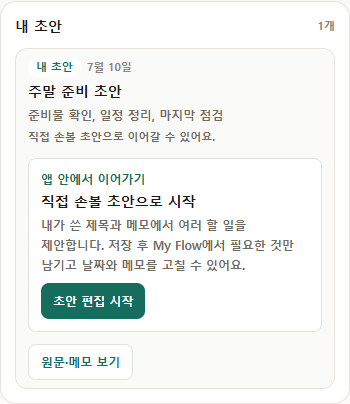
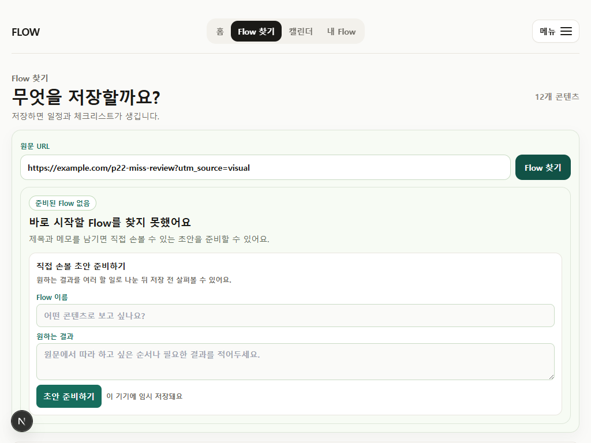
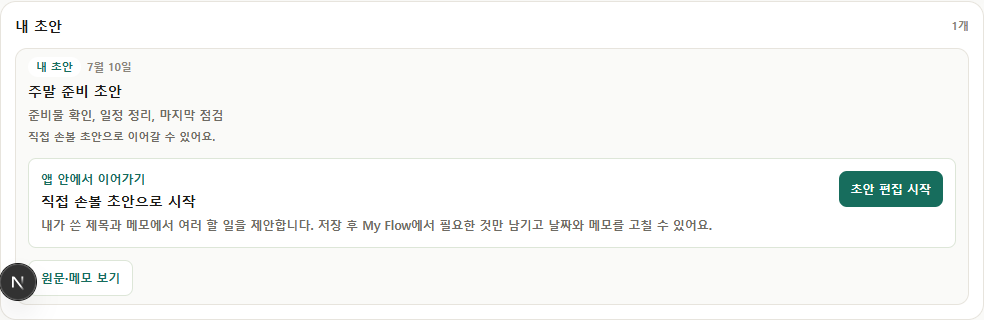

P22-03 · focused UX evidence
URL-first miss 첫 결정 압축
준비된 Flow가 없을 때 시스템 상태를 설명하기보다, 직접 손볼 초안을 준비하는 한 행동으로 이어지게 정리했습니다.
1miss primary action
0legacy state copy hits
0live AI implication
0horizontal overflow
변경 원칙
- 첫 행동은 초안 준비하기 하나입니다.
- 저장 후에는 초안 편집 시작이 우선입니다.
- 원 URL·재조회·수정·삭제는 원문·메모 보기 안에 둡니다.
- candidate/draft 저장 구조와 My Flow·Calendar·export 연결은 그대로 유지합니다.
390px


1024px

